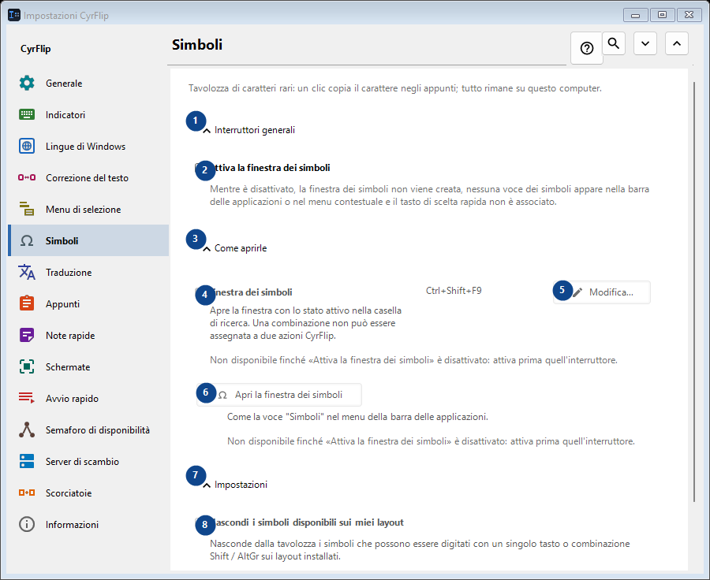
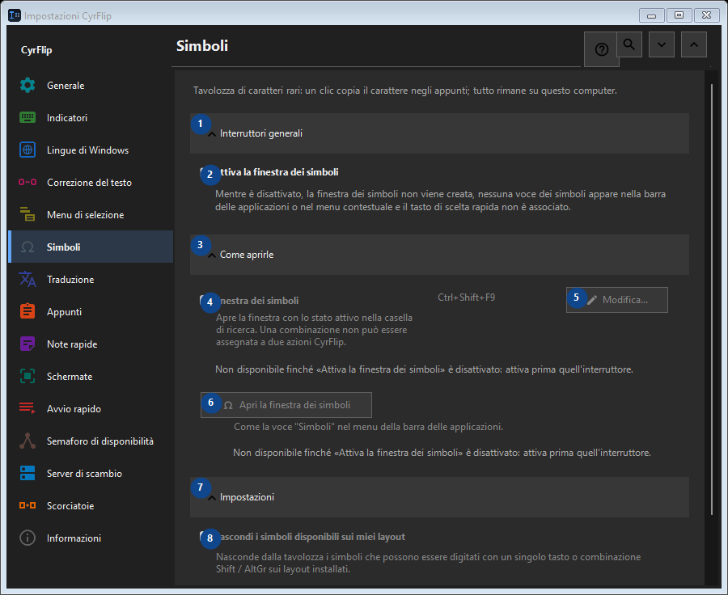

Simboli
A cosa serve
Tavolozza di caratteri rari: un clic copia il carattere negli appunti; tutto rimane su questo computer.


Ordine delle operazioni
Le impostazioni si applicano subito. Non serve un ordine preciso; usa i gruppi qui sotto.
Elementi
1. Interruttori generali
Usa questo comando per l’azione indicata. Leggi ogni richiesta di conferma prima di accettare.
Le tue scorciatoie2. Attiva la finestra dei simboli
Mentre è disattivato, la finestra dei simboli non viene creata, nessuna voce dei simboli appare nella barra delle applicazioni o nel menu contestuale e il tasto di scelta rapida non è associato.
Le tue scorciatoie3. Come aprirle
Usa questo comando per l’azione indicata. Leggi ogni richiesta di conferma prima di accettare.
Le tue scorciatoie4. Finestra dei simboli
Non disponibile finché «Attiva la finestra dei simboli» è disattivato: attiva prima quell'interruttore. Questo elemento non è disponibile. Attiva prima la funzione o seleziona una voce.
Le tue scorciatoie5. Modifica - Finestra dei simboli
Non disponibile finché «Attiva la finestra dei simboli» è disattivato: attiva prima quell'interruttore. Questo elemento non è disponibile. Attiva prima la funzione o seleziona una voce.
Le tue scorciatoie6. Apri la finestra dei simboli
Non disponibile finché «Attiva la finestra dei simboli» è disattivato: attiva prima quell'interruttore. Questo elemento non è disponibile. Attiva prima la funzione o seleziona una voce.
Le tue scorciatoie7. Impostazioni
Usa questo comando per l’azione indicata. Leggi ogni richiesta di conferma prima di accettare.
Le tue scorciatoie8. Nascondi i simboli disponibili sui miei layout
Non disponibile finché «Attiva la finestra dei simboli» è disattivato: attiva prima quell'interruttore. Questo elemento non è disponibile. Attiva prima la funzione o seleziona una voce.
Le tue scorciatoie